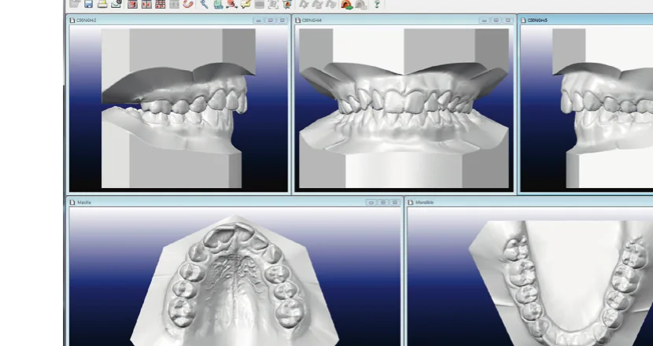

نسخه استخراجشده؛ ترجمه یا تأیید علمی انجام نشده است. وضعیت: captured
مدل یا اسکن دیجیتال سه کار میکند که معاینهی بالینی نمیتواند:
💡 امروز اسکنر داخلدهانی جای قالب آلژینات را گرفته، اما منطق تحلیل دقیقاً همان است.
و مدل دیجیتال یک قابلیت افزوده دارد که مدل گچی نداشت: سوپرایمپوزیشن مدلهای متوالی. با آن میشود مقدار و جهت حرکت انجامشده را کمّی کرد و سالها بعد، عود را از تغییر دیررس تفکیک نمود.
همین قابلیت است که بایگانی مدل پایان درمان را از یک کار اداری به یک ابزار بالینی تبدیل میکند.

| فرم | ویژگی |
|---|---|
| مخروطی | باریک در ناحیهی کانین |
| بیضی | حد واسط مخروطی و مربعی |
| مربعی | پهن و صاف در قدام |
⚠️ قانون طلایی ثبات: فرم قوس اولیهی بیمار را حفظ کن. تحمیل قوس مربعی به بیماری با قوس مخروطی، زمینهی عود را میچیند.
چرا؟ چون فرم قوس بازتاب تعادل نیروهای عضلانی همان بیمار است. تغییر آن یعنی بردن دندانها بیرون از منطقهی تعادل — و آنجا، لب و زبان هر روز کار میکنند تا برشان گردانند.
کاربرد عملی: آرچوایرهای آماده در سه فرم عرضه میشوند. فرم را از روی مدل اولیهی بیمار انتخاب کن، نه از روی آنچه در جعبه هست.
اگر فرم دو قوس در شروع درمان با هم نمیخواند، فرم قوس پایین مبناست — چون قوس پایین محدودتر است — و قوس بالا با آن هماهنگ میشود؛ مگر آنکه قوس پایین خودش، مثلاً با فشار لب یا عادت، تغییر شکل داده باشد.
از میان این پنج، عرض بینکانینی بیش از همه بر پایداری نتیجه اثر میگذارد: افزایش عرض بینکانینی، بهویژه در قوس پایین، تقریباً هیچوقت پایدار نمیماند. پس آن را بهصورت یک عدد ثبت کن، نه یک برداشت کلی.
و دربارهی خط وسط یک نکتهی ظریف: خط وسط دندانی را با رافهی کامی بسنج، نه با خط وسط دندانی قوس مقابل. اگر هر دو قوس منحرف باشند، مقایسهی آن دو با هم چیزی را آشکار نمیکند.
اگر یک نیمهی قوس بهوضوح کوتاهتر است و خط وسط به همان سمت رفته، معمولاً در همان سمت فضا از دست رفته است — مثلاً پس از کشیدن زودرس دندان شیری و مهاجرت دندانهای مجاور.
در نهایت این پنج عدد، ورودی مستقیم آنالیز فضا و طرح درماناند — نه یک تمرین توصیفی.
نوع سؤال: ساخت کلمه · 4 خانه
حروف منبع: م · ک · ا · ی